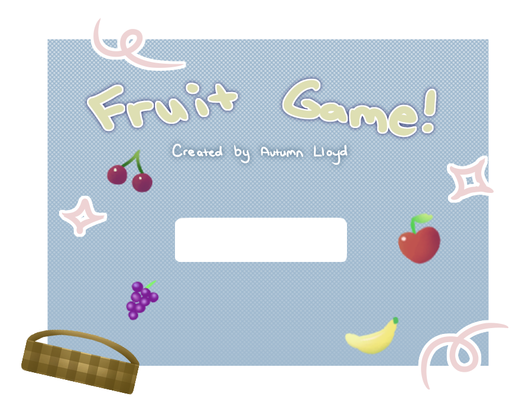
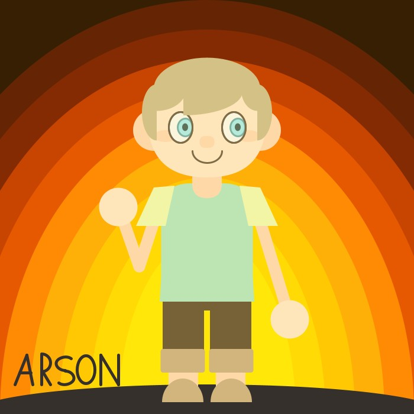
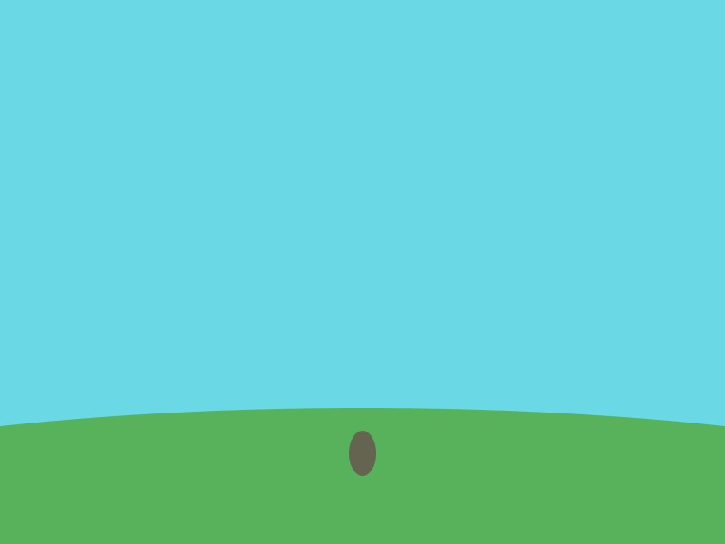
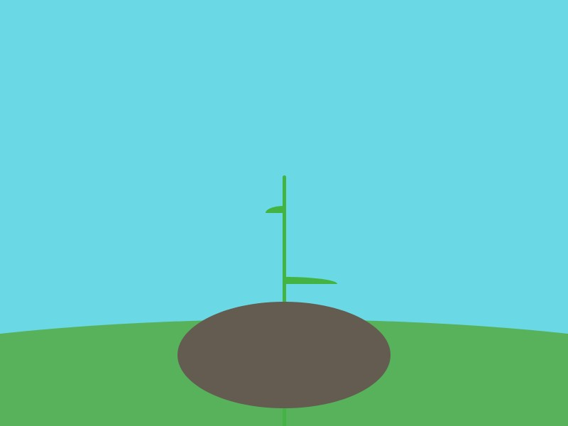
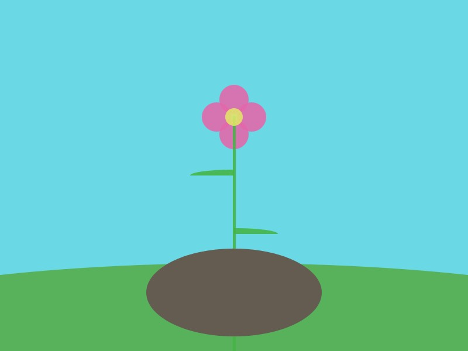
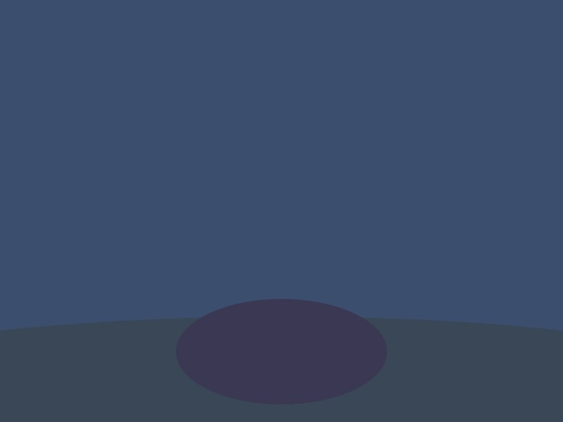
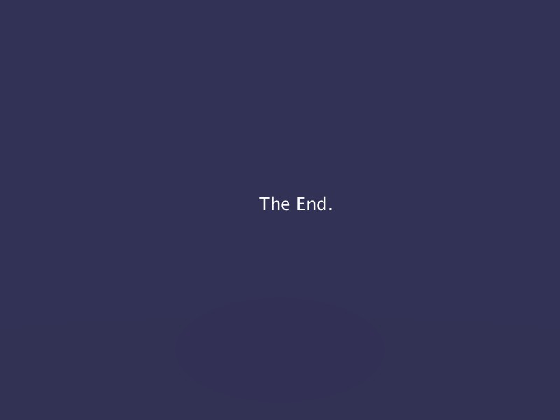

Processing is a graphics oriented programming language, designed for artists, by artists. Below are some projects that I have made in processing. Some projects have been omitted from the mobile version because they are not compatible.
This is a hyperlinked image that links to a zip file containing a fruit game meant to run in Processing.
This is the first big project I ever made in Processing. It is a satirical self-portrait in the style of the popular game Animal Crossing.
These are some keyframes from a simple animation I made in processing.
    You can play this game by dragging your mouse to interact with the paddle. If you win, a green circle will be shown. If you lose, a red circle will be shown. Press the space bar to reset the game. If the spacebar doesn't work initially, make sure to click the game first.